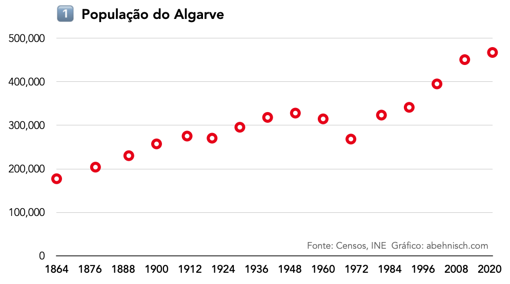
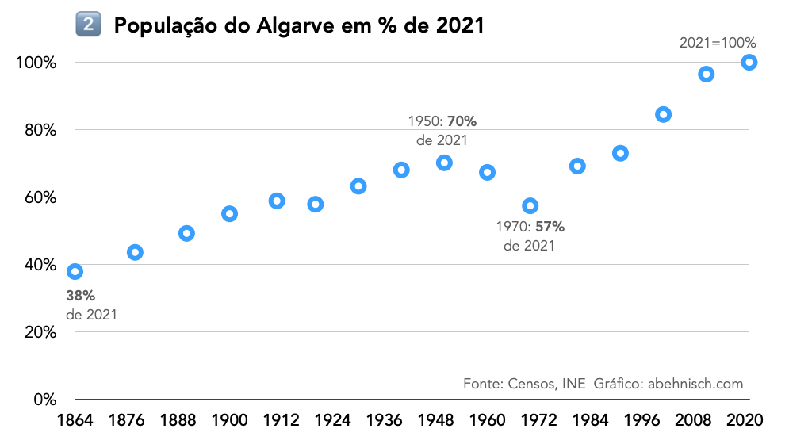
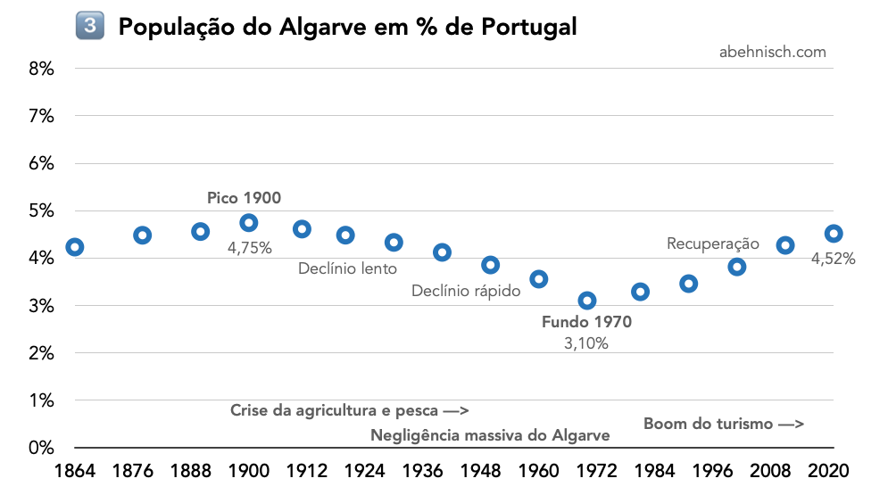
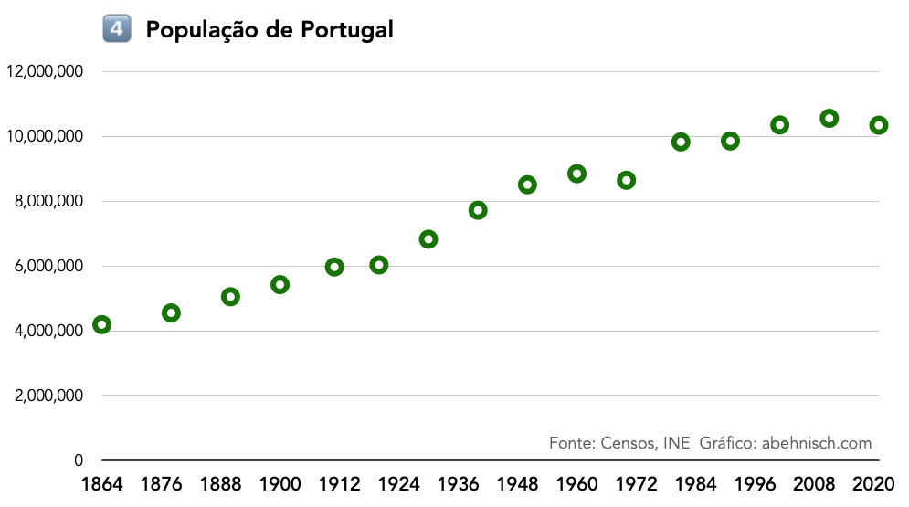
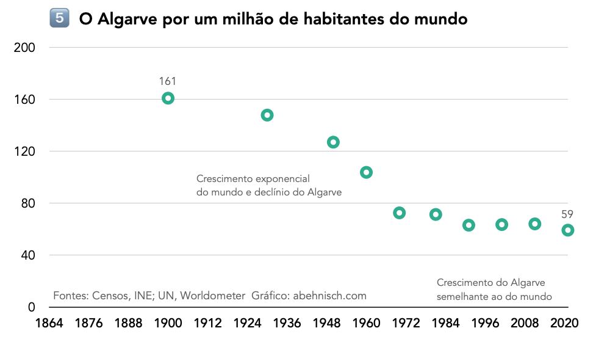
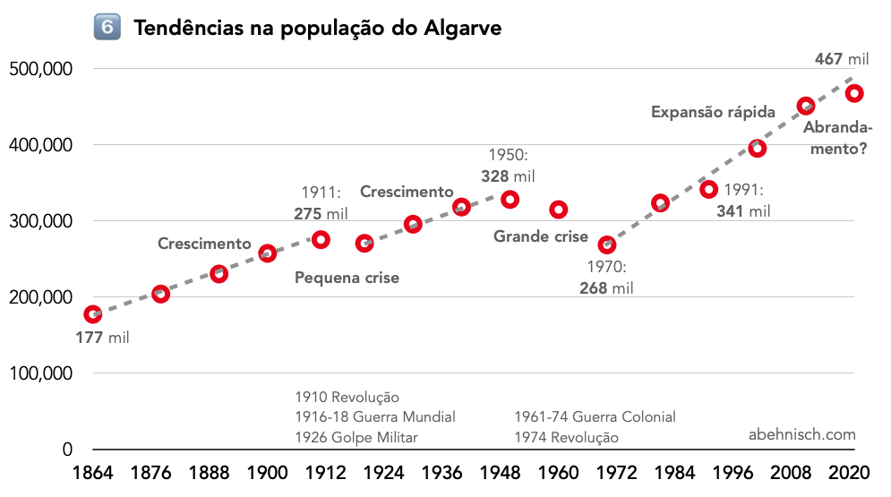
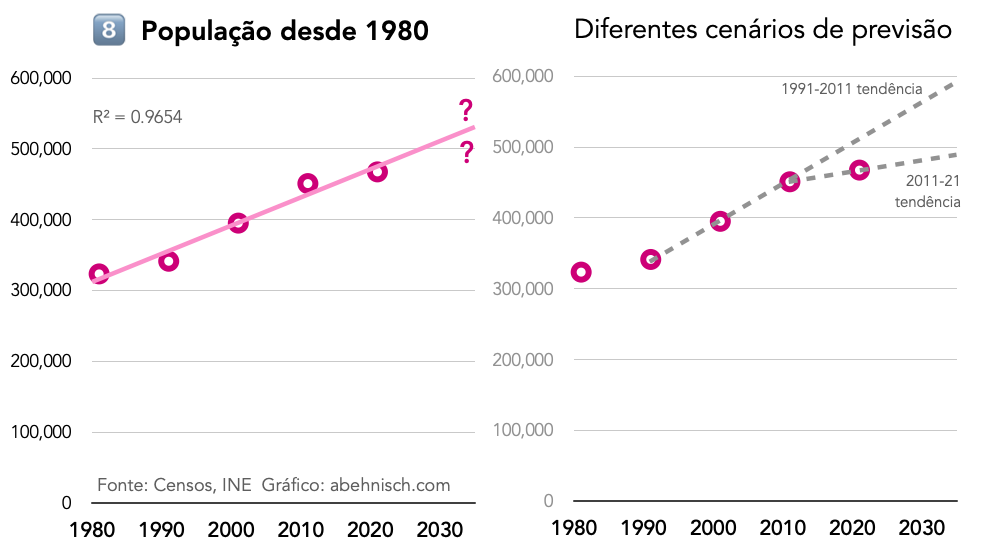

A população do Algarve
Menos de meio milhão de pessoas vivem no Algarve. O censo de 2021 contava exatamente 467.495 habitantes.
Aqui, concentro-me no desenvolvimento histórico da população algarvia no total.
Mais tarde, um outro artigo irá considerar as diferenças locais no Algarve.
Dados e Fontes
A tabela abaixo mostra a população do Algarve desde o primeiro censo em 1864 até ao último em 2021.
| Censos | População |
|---|---|
| 1864 | 177.310 |
| 1878 | 203.959 |
| 1890 | 230.279 |
| 1900 | 257.378 |
| 1911 | 275.348 |
| 1920 | 270.532 |
| 1930 | 295.660 |
| 1940 | 318.267 |
| 1950 | 328.135 |
| 1960 | 314.841 |
| 1970 | 268.440 |
| 1981 | 323.534 |
| 1991 | 341.404 |
| 2001 | 395.218 |
| 2011 | 451.006 |
| 2021 | 467.495 |
O Instituto Nacional de Estatística (INE) é a fonte oficial de todos os dados dos censos.
Os últimos resultados de 2021 estão no censos.ine.pt.
O INE tem uma excelente página de história sobre cada recenseamento desde 1864, com digitalizações dos documentos originais.
Para um acesso rápido, a Wikipédia também contém todos os números.
Nos censos, o Algarve é o mesmo que o distrito de Faro, com fronteiras inalteradas desde 1835.

Imagem: OpenStreetMap
Análise em gráficos
Vamos transformar os números da tabela 1 num gráfico.
Em 1864, o Algarve tinha 177 mil habitantes.
Exceto por duas quedas, em geral a curva sobe até atingir 467 mil em 2021.
Comparação em percentagem
Para uma melhor perceção da mudança histórica, o gráfico abaixo converte os números da tabela 1 em percentagem, com 100% para 2021.
177 mil pessoas em 1864 são 38% das 467 mil de hoje.
Em 1950, o Algarve atingiu um pico preliminar, com 70% de 2021.
Em 1970, a população tinha diminuído para 57% do nível atual.
Comparação com Portugal
Atualmente, os algarvios representam 4,5% da população portuguesa.
Em 1900, o Algarve teve a sua quota mais elevada com 4,75% e em 1970 a quota mais baixa com 3,1% de Portugal.
Nos últimos anos, a população de Portugal diminuiu, mas o Algarve cresceu. É por isso que a quota algarvia sobe.
Extra: o gráfico da população para Portugal:
Comparação com o mundo
Imagine que o mundo tem um milhão de habitantes.
De um milhão, 178 mil vivem na China, 1310 em Portugal e 59 no Algarve.
No entanto, no passado, a quota do Algarve era mais elevada.
Em 1900, o Algarve tinha 257 mil e o mundo 1,6 mil milhões.
Que era o mesmo que 161 algarvios por 1 milhão em todo o mundo.
Depois de 1900, a população mundial explodiu, mas o Algarve diminuiu ou estagnou.
E assim, a importância do Algarve caiu rapidamente até 1980.
Nos últimos anos, o crescimento da população algarvia é apenas um pouco inferior ao do mundo. Portanto, o nível é estável.
Evolução em pormenor
Voltemos ao primeiro gráfico e vejamos as tendências em detalhe. Podemos identificar cinco fases.
Primeira fase, 1864‑1900: crescimento normal
Segunda fase, 1910: pequena crise
Terceira fase, 1920‑1940: regresso ao crescimento
Quarta fase, 1950‑1970: grande crise
Quinta fase, depois de 1974: crescimento rápido
Talvez, agora começa a sexta fase com um crescimento mais lento.
Mais tarde, incluo aqui uma secção de história.
Taxa de crescimento anual
Um outro método que mostra tendências é a taxa de crescimento entre recenseamentos.
A tabela abaixo calcula a taxa de variação entre recenseamentos, o intervalo de tempo em anos e o crescimento anualizado.
| Censos | Intervalo | População | Variação % | Taxa anual % |
|---|---|---|---|---|
| 1864 | 177.310 | |||
| 1878 | 14 | 203.959 | 15,03 | 1,07 |
| 1890 | 12 | 230.279 | 12,90 | 1,08 |
| 1900 | 10 | 257.378 | 11,77 | 1,18 |
| 1911 | 11 | 275.348 | 6,98 | 0,63 |
| 1920 | 9 | 270.532 | -1,75 | -0,19 |
| 1930 | 10 | 295.660 | 9,29 | 0,93 |
| 1940 | 10 | 318.267 | 7,65 | 0,76 |
| 1950 | 10 | 328.135 | 3,10 | 0,31 |
| 1960 | 10 | 314.841 | -4,05 | -0,41 |
| 1970 | 10 | 268.440 | -14,74 | -1,47 |
| 1981 | 11 | 323.534 | 20,52 | 1,87 |
| 1991 | 10 | 341.404 | 5,52 | 0,55 |
| 2001 | 10 | 395.218 | 15,76 | 1,58 |
| 2011 | 10 | 451.006 | 14,12 | 1,41 |
| 2021 | 10 | 467.495 | 3,66 | 0,37 |
O gráfico acima apresenta a taxa anual.
Como já foi notado, vemos cinco fases: 1) bom crescimento, 2) pequena crise, 3) recuperação, mas depois 4) queda profunda, 5) recuperação e forte crescimento e talvez agora 6) abrandamento.
O futuro
A população algarvia aumenta fortemente desde 1980, numa tendência linear.
O crescimento entre 1991 e 2011 foi mais rápido do que entre 2011 e 2021.
A última tendência para 2011‑21 sugere que o Algarve terá 500 mil residentes após 2030.
Mas talvez até 600 mil é possível, se um boom como o de 1991‑2011 regressar.
Ou, por causa do coronavírus, a população também poderá estagnar no futuro.
Apêndice
📊 Todos os dados numa tabela
🇬🇧 Todos os gráficos em inglês
🇩🇪 Todos os gráficos em alemão